A Short History of CFD and High Performance Computing#
Note
The source files for this lecture are available at rblack42/CFD-lecture.
Why are you here?#
Hopefully, like me, you are fascinated by flight and want to understand what makes it possible. That idea has been a part of human history for as long as people watched bird-like critters navigate the sky. How in the world do they do that? We might have been fascinated by flying insects, but we usually just want to swat those things!
I was born in Washington, D.C. At about age three, I was introduced to the Smithsonian Institute, where I got a good look at my first airplane. Two years before I was born, Dr. Paul Garber, Curator Emeritus of the Air and Space Museum, brought the Wright Flyer back from England to be displayed there. Here is an image of its debut!
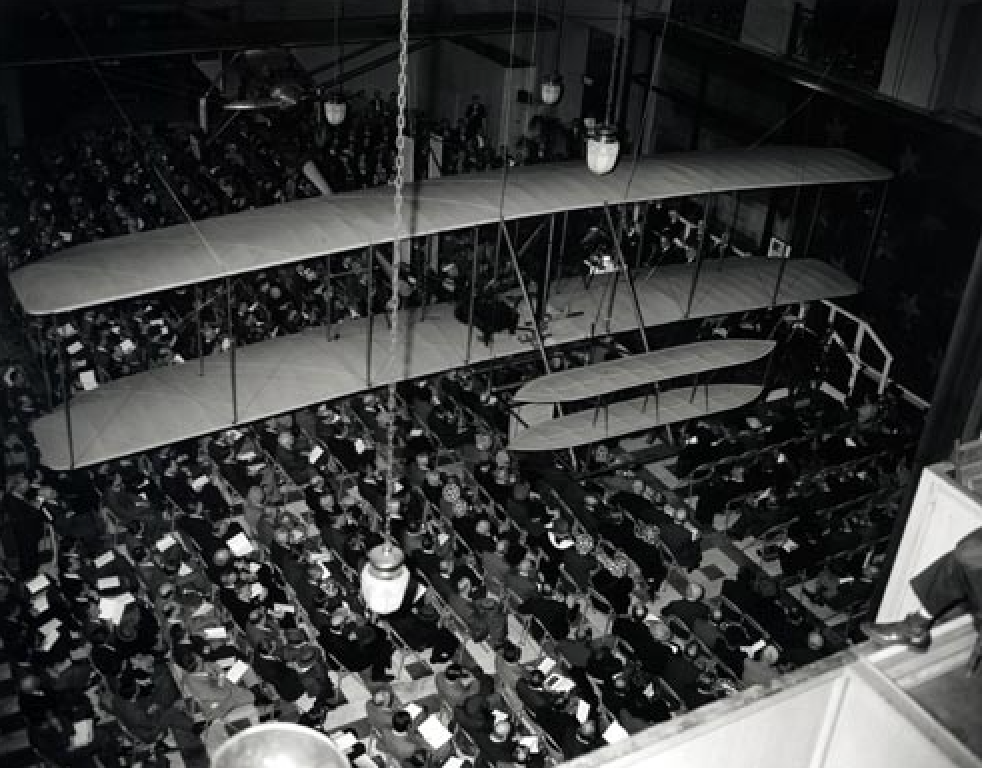{kind=link}
Note
I met Dr. Garber at a water fountain in 1956 when I was visiting the American Aviation Historical Society offices in the Smithsonian. Turns out a kid is too short to see the “Public Not Allowed Past this Point” signs, and I wandered into those offices one day. They let me help file papers, including a postcard from Glenn Curtiss to Orville Wright! They even took me out into the galleries and let me climb up a scaffold to get a close look at Curtiss’s 1910 Headless Pusher!
This airplane started flying in 1949, and I took my first ride on one two years later:
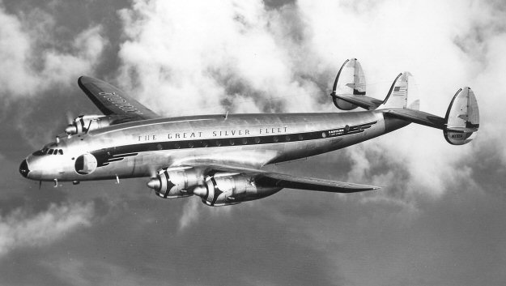{kind=link}
Human Flight#
When the idea of flying first struck humans, the best thing they could think to do was build a machine of some kind and jump off a cliff! Not very smart, but what else could you do? Perhaps make sure the cliff is very short!
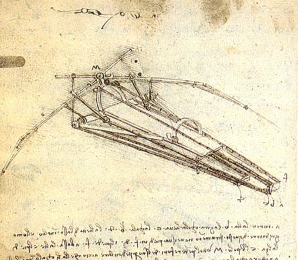{kind=link}
Leonardo was obviously interested in flight and produced many drawings of ideas for machines that might fly. (I have a set of DVDs with a copy of all his drawings!) None of them were very practical, but they showed what folks were thinking about back around 1500.
Eventually, it occurred to them that models of potential machines might save them some broken bones.

Most of you have never seen anything like this. This is my design for an indoor model airplane called a “Limited Penny Plane*, which must not weigh more than one U.S. Penny! [Bla21] A rubber band powers it. This kind of model has the potential to fly in a large auditorium for around 10 minutes. It cruises at a staggering 4 miles per hour!
Figuring out how to build and fly machines like this was how I began my journey to become an Aerospace Engineer.
Building real airplanes used to require building sophisticated models, usually made of metal, and mounting them in a Wind Tunnel that looked something like this:
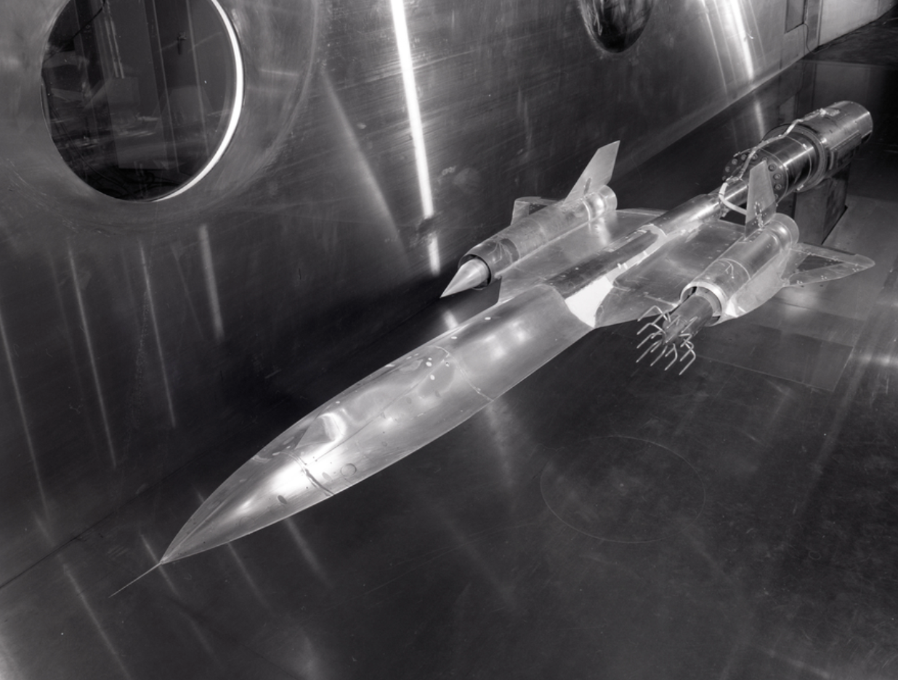{kind=link}
Note
This model shows the YF-12 design produced by Kelly Johnson in the Skunk Works at Lockheed. It flew at Mach 3 in 1963! This design evolved into the SR-71 reconnaissance airplane. There are still a few of these flying today (at NASA!)
Obviously, building models like this one is a very expensive operation, and you really want to be sure the design is sound before committing to this!
Wind tunnels have one big advantage, though. They use real air and blast it past the model at very high speeds, giving us a good way to figure out how the “real” airplane will fly. The Wright Brothers actually used a simple wind tunnel to design their Flyer.
That is, if we can figure out how to measure things. If you look closely, many probes are mounted on this model in front of the left engine nacelle. These will be used to measure some of the properties of the air moving by the model. This “experimental” data is vital in our work, especially when we try to develop new methods for predicting how a design will fly! Good CFD programs use wind tunnel data to validate their operation.
The Numerical Wind Tunnel#
Wouldn’t it be nice to do away with all that model machining and take a design straight off of paper and plug it into some computerized model and get the same data much more easily and at a much lower cost? Shoot, we could vary model and fluid parameters and use our “Numerical Wind Tunnel” to refine the design without touching anything metal!
That was our goal back in the 1970s when I was assigned as a research scientist at the Aerospace Research Laboratory at Wright-Patterson Air Force Base in Dayton, Ohio - home of the Wight Brothers, who actually flew off of a field that is now part of the base. (I even learned to fly over that same field - cool!)
That idea has been the “Holy Grail” of Computational Aeronautical Engineering for as long as computers became powerful enough to make that idea seem practical!
But it took a long time to get computers to that point. Let’s take a quick look at how computers developed and how “Computational Fluid Dynamics” really got started.
Scientist or Engineer#
One thing happened to me very early, a direct result of growing up in the Smithsonian! I wanted to understand how things work. Specifically, I wanted to know how flight worked. I developed a drive to dig deeper into what was going on in everything I touched (well, except for people - they are too tough to understand! Watch the news today to see what I mean!) I became a curious person (no giggles from the gallery, please.) That curiosity drove me to learn about many different things, which has served me well in my career. I never had a job where my bosses did not respect my capabilities or opinions. I am pretty happy with that! All of that background is what led me into teaching - so I could pass that knowledge on to the next generation!
I have thought about this question a lot in my life:
Am I a scientist or an engineer?
Engineers have a problem to solve. They want something that works. Working results are very important to them. Ok, I admit that just working is not enough. Their working result has to be safe and reliable as well!
Scientists want to know more; they want to know why that thing works. The drive to know why might take them into worlds they have never seen. Look at the history of Physics, especially Quantum Physics to see where Physics has taken us! []
Unfortunately, you never hear about Aeronautical Scientists, but they are out there. They are researchers seeking ways to improve what we know about fluid motion that we can use to make flight work better and better. Are they still engineers? You decide!
The Mathematics of Flight#
Since flying was hard, most scientists only dreamed of doing that “someday.” The mathematicians were not going to wait. They wanted to understand what was going on up in that air stuff.
Back in 1687, Isaac Newton came up with a few rules that described how things move. A few years earlier, Gottfried Leibniz developed calculus. In 1715, Brooke Taylor developed a way to represent a function as an infinite series of derivatives of that function. In 1822, Claude-Louis Navier and, later in 1850, George Stokes together produced what we now call the continuity and momentum equations. In 1850, William Rankine worked out a few laws of thermodynamics, which enabled us to describe how energy could be added to our equation set. Finally, mix in a few principles from chemistry, and all we need now is a way to solve this complex system of equations.
The Navier-Stokes Equations assume that our fluid, air, is a continuous medium. Physicists know this is not true, but these equations give us a reasonable way to describe how a set of fundamental physical properties change from place to place and from moment to moment. The equations are hard to derive and even harder to solve.
When these equations were first written down, the scientists of the day could not find any complete solutions. What they could do was slice off terms, hoping to get to a point where they could solve something. They had some success in this work, and many of the simplified techniques they developed helped power the evolution of flying vehicles. My first look at conformal mapping that showed what the flow over an airfoil looked like was fascinating!
Eventually, mathematicians, including Isaac Newton, worked on representing the derivatives of a function as an infinite series of simple terms, and the finite difference was born. That allowed them to take extremely complex differential equations and approximate them with algebraic equations. There was some hope we could solve those, but the calculations would be tough. Grinding through the calculations was going to take a long time. Also, in working with these approximate equations, we introduced errors in the solutions. We would need to study those errors to decide if we liked (and trusted) the answers we were getting!
At this point, we really needed some help to do the boring number-crunching work. We now need to see how computers came to enter the picture!
Basic Computers#
I used to start my classes in Computer Architecture with this simple statement:
Computers are stupid! They are just stupid so fast; they look smart!
We have been working on building machines that could do simple math for a long time. One of the earliest such machines looked like this:
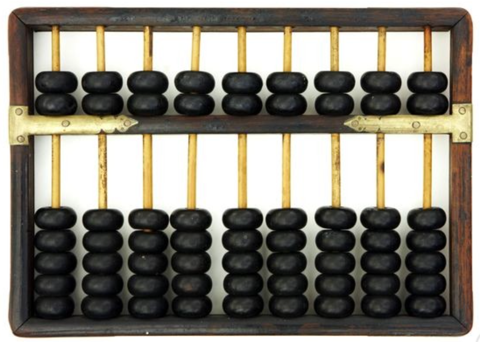{kind=link}
These gadgets have been used since around 200 B.C.! I watched a merchant flip those beads when I bought one while on a trip to China in 1995. It was an amazing experience!
This is not really a machine. But it did help humans track things as they did “arithmetic!”
Building actual machines that could help us humans do math was a long, arduous process. We had problems constructing machines with the complexity to do much, even adding and subtracting! Eventually, we managed to come up with some clever machines. Some worked, but many did not!
This is Charles Babbage’s Analytical Engine from 1834. Ada Agusta Lovelace thought up the idea of “programming” this thing using wooden punch cards from the Jacquard Loom developed in 1804.
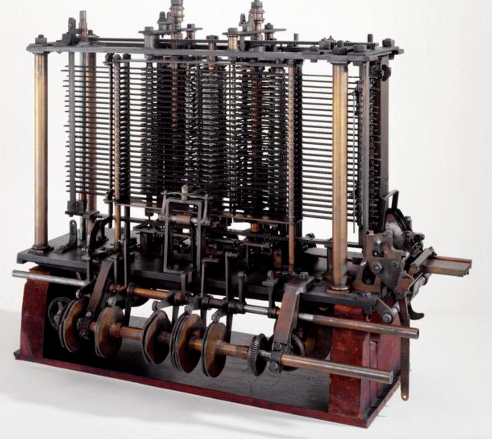{kind=link}
Here is a Curta Calculator that appeared right after World War II. I used this beast in my early aero classes when the professors wanted more accuracy than I could get from my trusty slide rule!
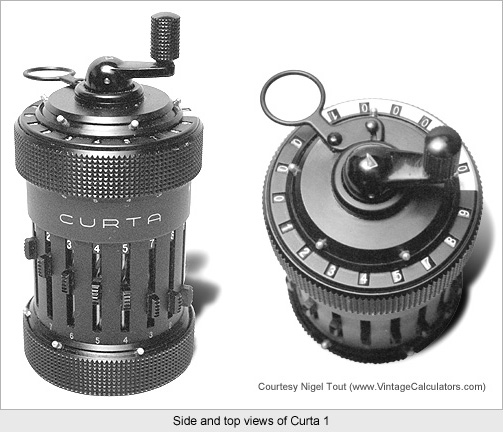{kind=link}
World War II#
The push to develop fast machines that could “crunch numbers” took off in earnest during World War II. Calculating tables used to aim guns at bad guys and breaking complex codes used to encrypt messages was a serious business.
Most of the work on these problems involved rooms full of people (usually women, since most men were on the front lines). Crunching numbers used mechanical calculators or was even even by hand using pencil and paper! They clearly needed something faster.
Harvard Mark I#
In 1944, Howard Aiken at Harvard University constructed an electro-mechanical machine using vacuum tubes, relays, and even motor-driven spinning mechanical gadgets that were common in calculators of the day. It worked, but it was hard to keep it running.
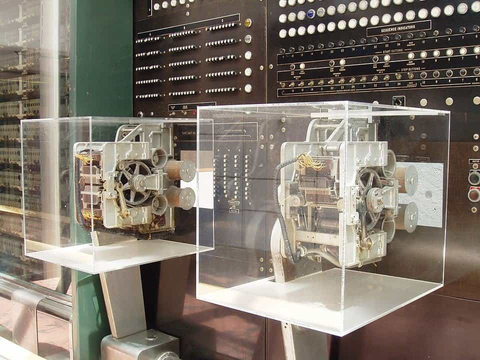{kind=link}
Grace Hopper, the first female to reach the rank of Admiral in the U.S. Navy, worked on this machine and is considered one of the first computer programmers. (Ada Agusta Lovelace never actually programmed that machine she admired.)
Von Neumann#
While working on the Manhattan Project, John Von Neumann published a paper in 1945 laying out the basic architecture of a “stored program” computer. Since then, all computing machines have basically used his architecture. In fact, they are called “Von Neumann Machines”:
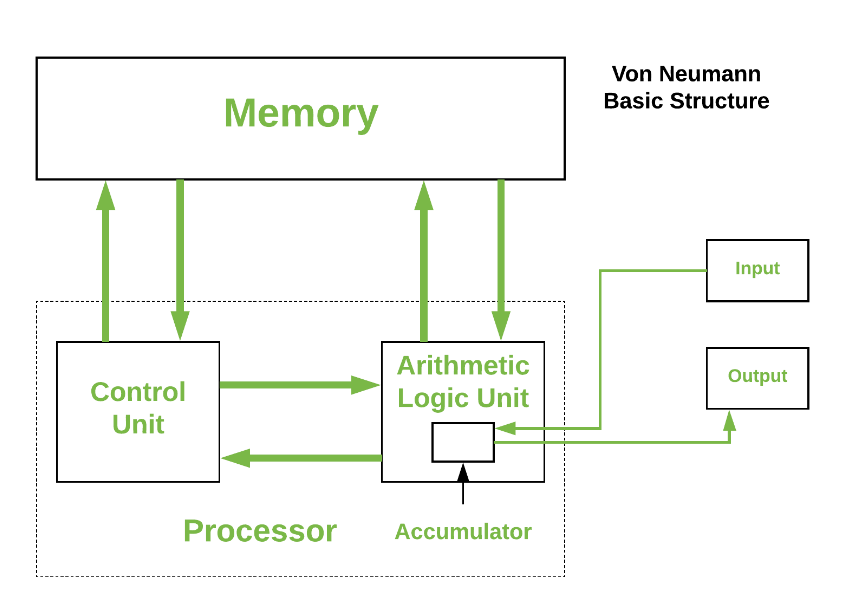{kind=link}
The basic idea for how this would work is something I call the Texas Four-Step (I was teaching all this in Texas after all!):
Fetch - transfer an instruction from program memory into the Control Unit
Decode - break apart the instruction and configure the Control Unit
Execute - Process the instruction, maybe do some math
Store - save the results somewhere, maybe back in memory
You repeat this process to the beat of something we call a Clock, that ticks along. These days that clock ticks billions of times each second. Amazing!
ENIAC#
Von Neumann’s work heavily influenced the design of the first fully electronic computer, which was first fired up in 1945:

This beast had 17,000 vacuum tubes, and 1500 relays, weighed 30 tons, and cost $487,000 back then! Programming was done using punched cards. There was no high-level language! But it worked, and computer science took off!
This machine was designed by J Presper Eckert and John Machly, who went on to form what is now the Unisys Corporation. I met Dr. Eckert at a meeting of the Philidelphia Area Computer Society sometime around 1982, where they demonstrated the Commodore 64 and compared it to ENIAC [Lon83]!
The Mainframe Era#
Between 1945 and 1971, the computer world was dominated by mainframe computer systems. These machines were huge and very expensive. Only big corporations (and universities) could afford them. The machines were locked up in “machine rooms” where only trained technicians could actually touch them!
In 1964, when I started my aerospace engineering degree at Virginia Tech, the school had an IBM-360 computer, nearly identical to the machines (six of them) that NASA used to land Apollo 11 on the Moon. The language all engineers used on this machine was Fortran!
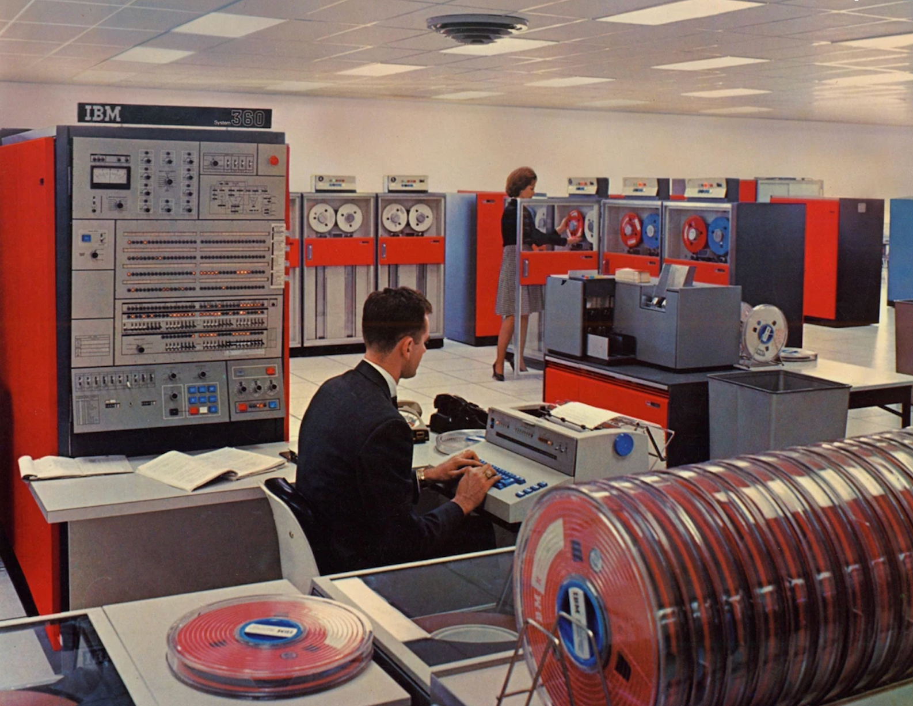{kind=link}
I taught myself Fortran while working in the Flight Test Division at McDonnell Aircraft as a Cooperative Engineering Student. In 1968, I even got to sit in one of these airplanes in the hanger before the paint job was added!
{kind=link}
Working there was great motivation to do well in school!
Note
Programs were typed on “Key Punch Machines,” which produced one 80-character line of text per card. My Master’s Thesis was a stack of cards that fit in a metal tray about two feet long and had a nice leather handle to carry it. I slid that tray through a window to a technician, and usually a day later, got my tray back along with a huge pile of paper with the printed results!
The Transistor Revolution#
In 1956, John Bardeen, Walter Brattain, and William Shockley won the Nobel Prize for inventing the transistor. This was a small device with no moving parts, and some amazing properties. It could create a simple switch easily, and became the primary component used in computer systems. After that, the tubes and relays disappeared. This made for cooler (temperature) machines that used less power. It also made them less expensive and much smaller.

Supercomputers#
As mainframes became more sophisticated, there was a push to develop machines that could work much faster. It took clever designs to push in this direction. Fortunately, some designers understood how to make those electrons move more quickly! One of them was Seymore Cray.
CDC-6600#
Around 1964, Seymore Cray introduced the CDC-6600, one of which was installed at Wright-Patterson Air Force Base and running in 1973 when I was assigned as an Air Force research scientist after graduate school.
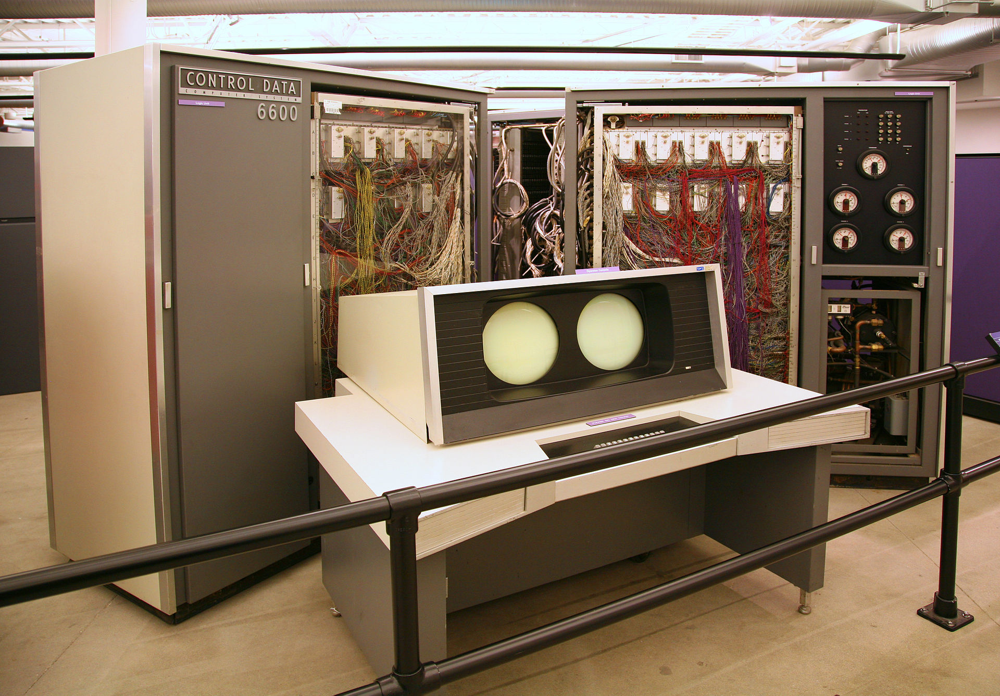{kind=link}
This machine cost about $2.3 million and ran at 10MHz. It had 64-bit memory, all 982 kilobytes of it! This machine was where some serious CFD codes were being developed. The term “supercomputer” was first used to describe this machine, but it was hardly “super”! Your iPhone has much more power than this today!
My first serious CFD code was developed on this machine and solved hypersonic flow over a simple missile flying at zero degrees angle-of-attack (axisymmetric flow) at Mach 6. It took 10 minutes of this machine’s dedicated crunching time to get a printed result. I might be lucky and get the results on a magnetic tape I could later process to generate graphics displays, but such power was very new, and few knew how to make pictures appear. Sometimes, we used pen plotters to draw graphics, but often, we plotted things by hand! Sad!
Note
Around 1976, I got a month-long assignment at NASA Ames Research Center in Mountain View, California, and took my code there. I made a movie showing the evolving results:
ILLIAC IV#
NASA Ames also was the home of an experimental machine that basically looked like a series of CDC-6600 machines lined up in a row. The machine was potentially going to be fast, but the complexity of it kept it from becoming fully operational. I got a look at the machine on my visit:
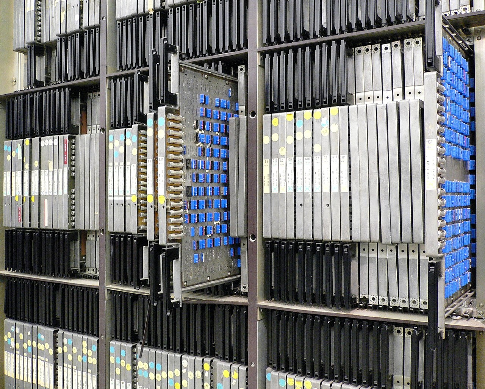{kind=link}
This machine was supposed to have 256 floating point units, but they ran out of money before completion. It was not available for use while I was there.
Serious Supercomputers#
Seymore Cray got tired of working for CDC, and took several engineers with him to form Cray Research Corporation. Seymore designed a new machine that was designed for serious number crunching. Instead of setting up a simple two-number-adding device, he designed one that added two sets of 64 numbers together all at the same time. This was called a vector machine. He used some clever tricks to make his system go faster, one called pipelining, which broke up a single long-running operation into a sequence of smaller steps, each running quickly. More input data could be loaded into the first stage since, as soon as the first stage was complete, it could accept new input rather than waiting until all stages were completed.
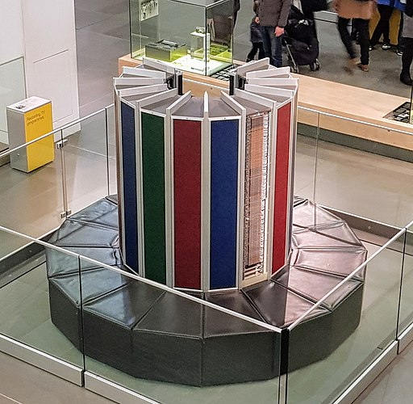{kind=link}
The Cray-1 was an $8 million machine with 8 MB of memory. It was capable of 160 MFLOPS, which was impressive in its day!
Vector machines had one problem. To maximize efficiency, you needed to make sure you had 64 numbers to add available simultaneously, so programming was pretty complex. This problem was eventually hidden behind supporting libraries and really smart compilers. Still, it took careful coding to really get speedy solutions.
Note
By the way, when I retired from the USAF, I was Acting Director of the Philllips Laboratory Supercomputer Center at Kirtland AFB, in Albuquerque, NM. I decommissioned one of the last Cray-1 machines in 1990!
My research group managed to get time on one of these machines being tested before delivery to a customer. The huge problem we had was the lack of a programming language (we were using Fortran!) Instead, we had to use Cray Assembly Language. I knew nothing about this, so I decided to figure it out.
The Dawn of the Integrated Circuit#
In 1971, Intel Corporation released a magical chip called the Intel 4004. This small chip lived inside a 16-pin case and contained all the basic parts needed to create a 4-bit calculating device. It was supposed to end up in hand-held calculators, but its real impact was to show that we could build computing devices in this new way - with integrated circuits!
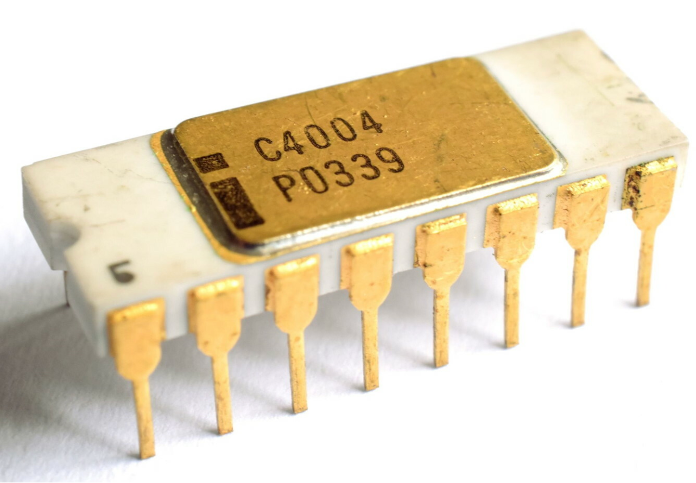{kind=link}
The 4004 was followed by a more useful eight-bit machine called the Intel 8080. Those chips ended up in the first computing device a normal human could buy if they were willing to build one from a kit!
I could not quite afford the $450 it took to buy the kit, so I bought this gadget:
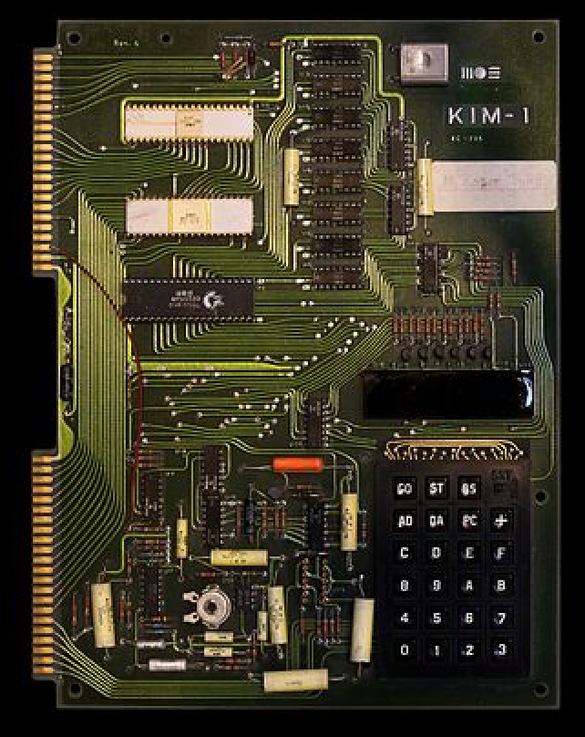{kind=link}
This single board held an eight-bit chip, a staggering 1KB of RAM, and an interface to a tape recorder. It had a seven-segment LED display for output and a way to connect it to a terminal or teletype machine. I used this device to learn assembly language, then worked through the Cray manuals to try to figure that language out. To my dismay, I discovered that each computer had a different assembly language! UGH!
Note
Believe it or not, there was a chess game for this critter that fit in 1KB of memory! The board cost $250, and my boss freaked out when I hooked it up to a $12000 graphics terminal I used for early work on computer graphics for my CFD code.
Shrinking the Chips#
The technology used in building these integrated circuit devices was complicated. The chips were constructed in hyper-clean rooms. The materials needed to form the transistors, and interconnecting wires, were sprayed onto a silicon chip using a photographic mask that controlled where the gas landed. Many layers of this procedure formed all of the electronic parts needed.
Early chips could build transistors as small as several millimeters in size, and we could put thousands of them in a chip an inch square. As they got better at this, suddenly, we could put millions of transistors in the same space. Chips like the Intel 8086, a 16-bit machine, appeared, and even useful home computers became possible. (Ever heard of a spreadsheet? That piece of software convinced IBM to release the first personal computer really designed for businesses. Well, accountants!)
Just to give you some perspective, today’s manufacturing can build a transistor as small as 3-4 nanometers. How small is that? Well human hair is about 10-80,000 times that big. We are now reaching the point where going any smaller might require moving atoms around. Did you know that IBM did just that in 1989?
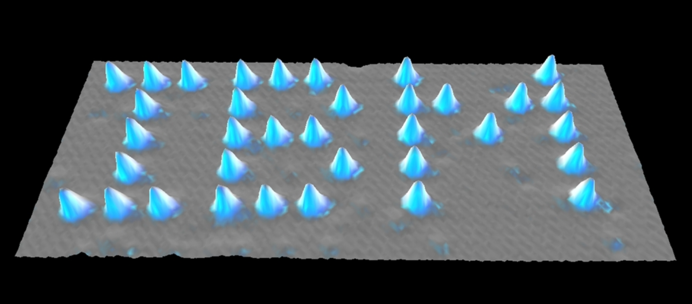{kind=link}
Oh, and remember this! For each of the over a billion transistors we place on a chip, three wires are needed to hook it up to the other parts in a circuit! Those wires carry electrons that move at the speed of light, which is the limiting factor in defining the speed of our calculations!
Note
Physical electrons, those funny gadgets that carry an electric charge and spin around in each atom, do not actually move that fast between atoms. They only move between atoms at about one millimeter per second. A moving electron causes an electromagnetic wave that moves at the speed of light. t is those waves that move our signals around.
Hitting the wall#
Eventually, we reached a point where making transistors smaller was pretty hard. But the computer processor parts were small enough that engineers had an idea. Why not put two processor chips on the silicon, interconnect them so they can share memory and input/output, and package a dual-core device? Intel released the Pentium dual-core processor in 1993.
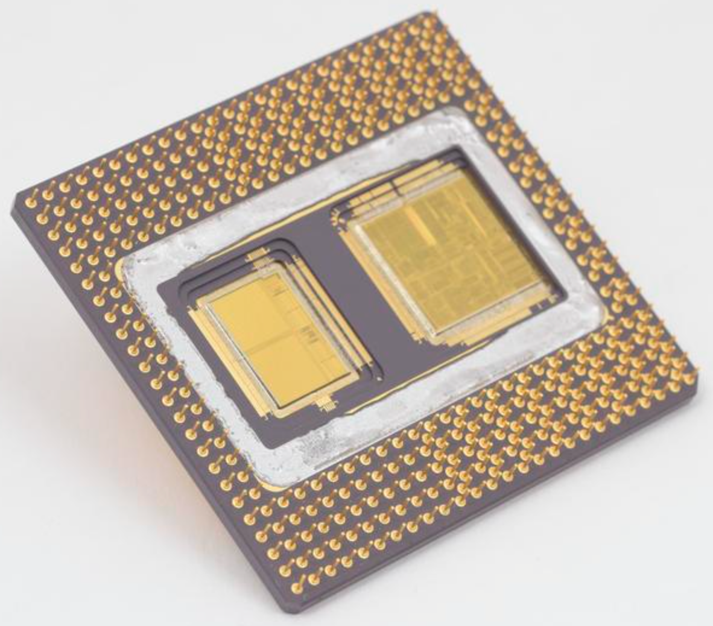{kind=link}
Note
These chips were built in a plant outside of Albuquerque, where I ran a Cray-2 supercomputer! I used to carry a Pentium chip on my keychain, a gift from Intel when I toured the plant!
Multi-Core Supercomputers#
Using more than one processor in a machine was not limited to small machines. Seymore thought that would help his big machines go faster as well.
Cray-2#
Seymore was always looking for “More Power.” The problem was that running faster generated more heat and used more electricity. The Cray 2, introduced in 1985, was Cray’s first venture into a multi-core supercomputer. The design was unique. It had four processors and could reach 1.9 GFLOPS! The entire machine was emersed in an inert coolant that circulated through cooling towers to dissipate the heat! (It looked like a giant fish tank. (Not goldfish, “Cray Fish”! Yuck, Yuck!) When it was introduced, it was the fastest machine on the planet!
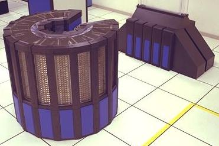{kind=link}
It was so fast we used an IBM mainframe to feed it and extract the data from a run!
Big Supercomputers like this continued to evolve. Many machines were developed that tried to compete with Cray, but the writing was on the wall! Those small “personal computers” were getting powerful enough to do serious work. We also now had a nice network system, which began when I was at ARL as the ARPANET and evolved into the Internet. By 1990, machines could communicate and transfer data and code back and forth. Time for a new idea!
Beowulf#
In 1998, NASA engineers thought that hooking up a number of small machines using network technology would generate a useful machine. Techniques for passing data back and forth were developed using a scheme called message passing. These machines ran a version of Linux, largely because it was way too expensive to install something like Windoze on many machines. Beowulf was the name given to this architecture, and it started off a revolution.
Suddenly, we could multiply the processing power of a single machine by the number of small machines we decided to hook up. Well, not so fast! We still face the problem of transferring bits over a network.
Grace Hopper, one of the first programmers on the Mark-1 team, used to carry a piece of wire 11.5 inches long to meetings. She would tell them: “This is how far electrons go in one nanosecond.” That is one billionth of a second! Machines today are running at clock speeds of several billion ticks per second, so we actually need to worry about how far electrons need to move between internal components! Also, remember that floating-point operations do not usually happen in a single clock tick.
Simple networks could only move 10 million bits per second between machines. Not really fast, but as long as the program spends most of its time doing calculations, the data could keep up. Eventually, network speeds increased. Today, we can reach over a billion bits per second if you are willing to buy fast (more expensive) hardware.
Eventually, cluster software was developed, and the idea really took off. Cluster machines were popping up all over. Schools hooked up a lab full of computers to build a cluster.
As machines got cheaper, folks like me bought several small machines for testing. I used Intel NUC computers to build a four-node cluster for testing in my home shop.
Clustered Supercomputers.#
Not to be outdone, the supercomputer world went to work on the bottleneck - the network. They started looking into ways to speed up the data transfer rate between independent machines. The results were impressive. Instead of moving data at one billion bits per second, they could reach speeds of over 200 Gbps!
We are off and running again!
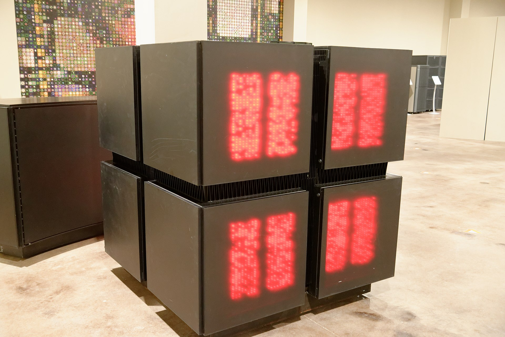{kind=link}
This machine, one of which I saw at Los Alamos National Laboratory in 1991, contained 65536 microprocessors, each with four kilobytes of memory.
``{note} It was fun to watch all the blinky lights when this beast ran - especially in a dark room!
Can we do better?
Enter the Gaming Folks!#
One annoying development in the history of computers is the development of the greatest time-waster in history - the video game! Unfortunately, these things can suck productivity out of a player faster than a supercomputer!
However, there is a plus side!
A video game displays millions of dots on a screen, each a specific color. Those dots are so tiny humans do not notice them. Each dot needs around 24 bits of data to define the color somewhere in the machine’s memory. If you want something on the screen to move, you must move many bits around in memory! There is also a lot of math needed to figure out if your moving object has bumped into some other object. The computer can do this work, but a lot of it is just a tedious repetition of some basic process. Why don’t we build some device to do that nasty work? Enter the Graphics Processing Unit, or GPU
The basic idea behind this gadget is simple; do the same operation on a bunch of different data. This is called Single Instruction Multiple Data or SIMD.
There is more to these devices, but their development proceeded along, and some amazing boards were developed that make gamers very happy. (Not so much the space aliens, though!)
Eventually, software folks discovered that they could develop code that could offload other kinds of processing on these boards. This processing did not reach a screen; the final results were back-loaded to the main computer running some serious application. Hey, the code got faster, at a cost of several hundred dollars for each GPU board.
Chip designers jumped on this idea as well and included small GPU devices on their processor chips, just like they did with multiple cores. The result is today’s supercomputer world! Huge numbers of small computer machines, all running Linux, most sporting the best GPU board they can find (or afford) and housed in big facilities where they can be powered and cooled.
NCAR Cheyenne Supercomputer#
A few years ago, while visiting relatives in Cheyenne, WY, I visited the National Center for Atmospheric Research Supercomputer Center, which is the home of the 58th fastest machine today! This computer consists of 4032 compute nodes each sporting two Intel 18-core processors and 256GB of RAM!
Since I used to run a supercomputer center, they gave me a VIP tour of the facility:
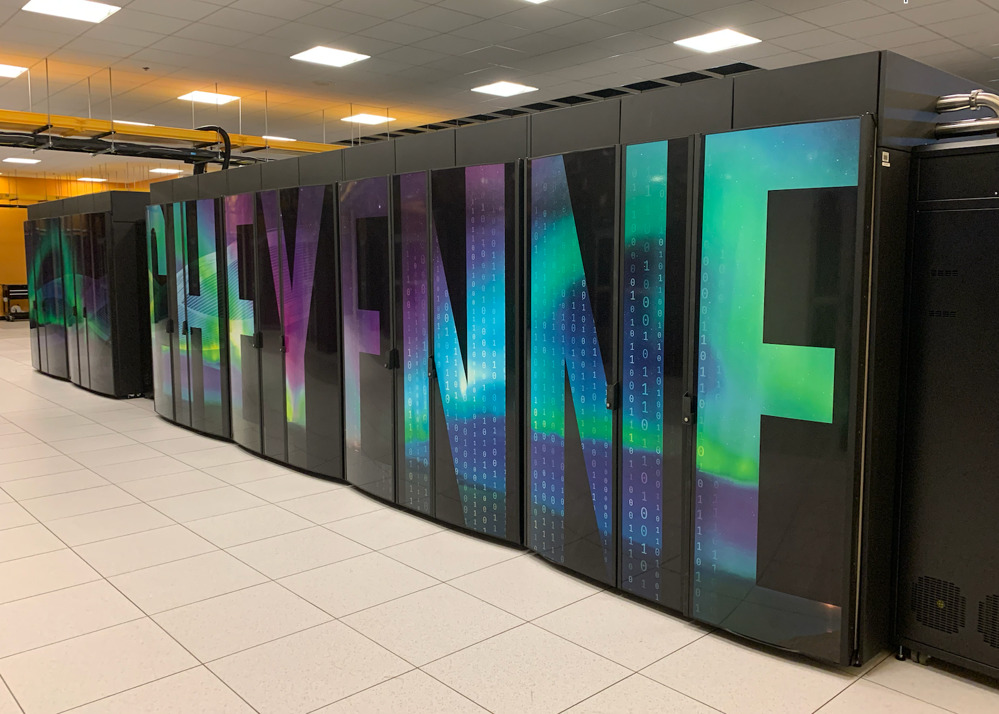{kind=link}
The actual machine fills up a rather large room, and the facility is next to a huge lake that supplies cooling water. Nearby, there is a wind farm that supplies some of the power for the machine.
I had them open up the back of one of these cases to see the network wiring:
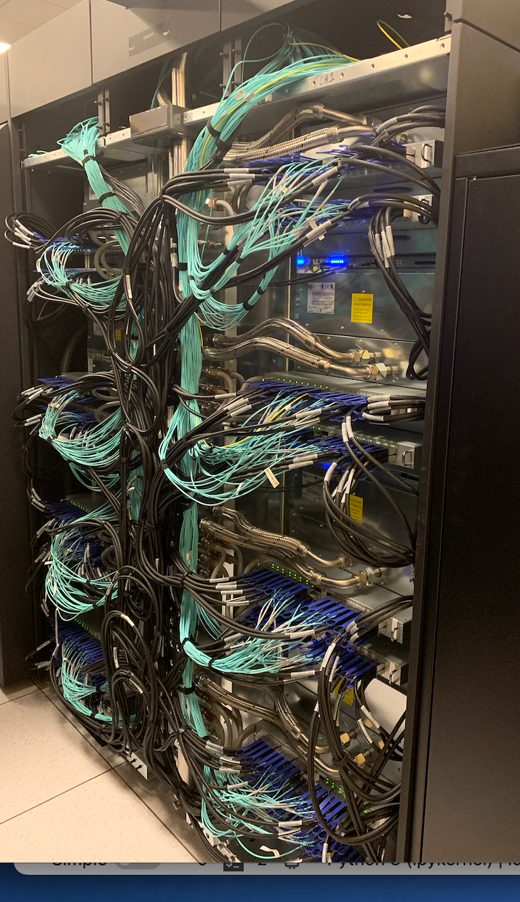{kind=link}
The complete machine has over 145,000 cores and 432 terabytes of memory! This machine can reach 5.4 PetaFLOPS (peta = 1 billion x 1 billion!)
Pretty fast! But the 2023 Top500 list of supercomputers put another machine at the top as the fastest in the world!
DOE Oak Ridge Frontier#
The top machine for 2023 has 8699905 AMD 2ghz processors and can perform a staggering 1.194 ExaFLOPS!
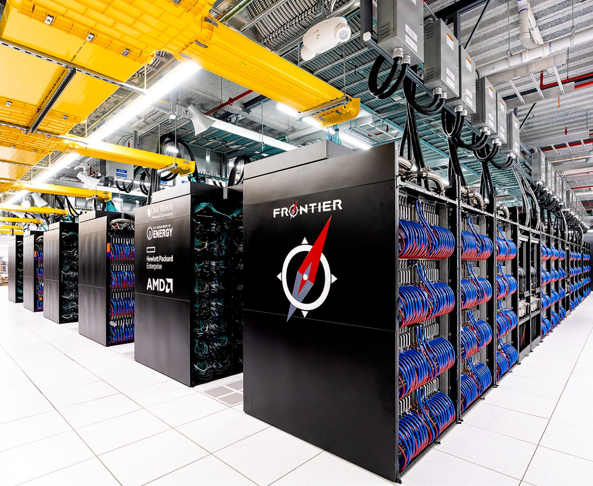{kind=link}
Note
Just for reference, here are the speed terms:
Giga = 1 billion
Tera = 1000 Giga
Peta = 1000 Tera
Exa = 1000 Peta
Unfortunately, it takes $40 million to buy one of these, and it needs 1727 kilowatts of power to turn it on! Fortunately, it runs using the same Linux libraries I use on my baby cluster.
I doubt I can get time on this machine, but I hope to try one of my programs on Cheyenne!
Is This the End?#
Have we reached the end of this march toward speed in computing? I think not.
Think about what that last machine has going on inside. There are thousands of general-purpose computer machines, any one of which would be a nice addition to your home office (well, not really - those high-end Intel processors in Cheyenne cost about $2500 each!)
Each processor has a private copy of Linux installed and all the networking support and other management code needed to wake the machine up and load your research program. That is a lot of overhead. Could we do better?
Baby Machines#
Looking at my research code, I am struck by how simple the basic operations actually are. Most of the work is just a giant loop over each data point in a grid, with several hundred simple math operations being processed. Those calculations must fetch numbers from memory, and store results back into memory. That adds up to a lot of work, but does it take a mega-buck machine to do just that?
Here is a basic computer processor I used in my Computer Architecture courses at Austin Community College.
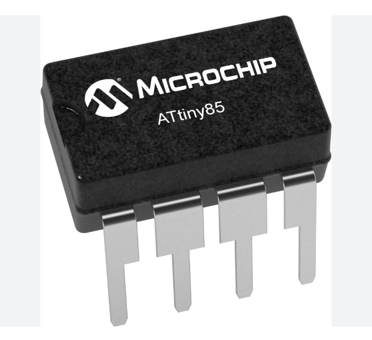{kind=link}
This little chip, which cost around $2, holds a complete computer with internal memory for both programs and data. It has enough calculating power to do some real work. Normally, these little chips end up by the dozens in your home appliances and even your car! My students used this chip as a basis for writing a C++ program that emulated what was going on inside. It was a lot of fun and a challenge for new C++ programmers!
Connecting each chip to another chip requires one wire. Unfortunately, there are not that many places where we can attach a single wire. There are only eight pins on this tiny thing.
What if we created a grid of these chips and interconnected them the same way we create a computational grid for our aero problems? We could have thousands of these critters in a box that would fit on your desk!
Custom Computers#
That little machine is still pretty general-purpose and only processes eight bits at a time. We can do even better!
We have been building computers, or rather, growing computers, for long enough to see basic patterns in how the chip hardware is laid out. Most current computers were designed with no thought (well, little thought) into the specific problems they will process. Chip designers have devised a tactic to build a chip with a pattern of basic parts and interconnects that can be programmed to create a specific design. Basically, we add code that hooks up the parts the way we want. These chips are called Field field-programmable gate Arrays. They offer another potential revolution in computing.
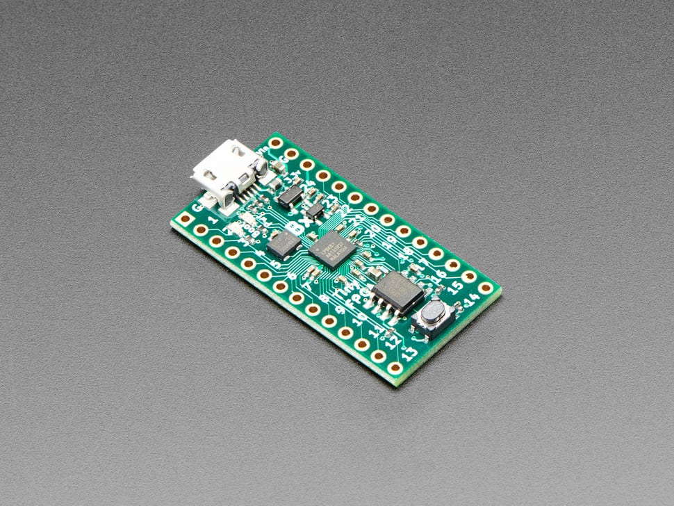{kind=link}
What if we custom-design a chip to do our CFD problems? We can manufacture these custom chips as needed to build the machine we need for just our specific problems. Create custom boards to mount and power everything and run your problems! No operating system is needed, just your code and basic support code to make the calculations fly and the data move around!
Is this even feasible? I can see a world where we start with our basic mathematical definition of the solution we want, add in a geometry of data points we will need to analyze the flow field, then let a sophisticated compiler assess the math and figure out how to design and interconnect our custom machines to generate a solver.
What About AI?#
If we mix in some AI, we can probably figure out how to actually work only where we need to work, not everywhere. If you watch a typical CFD program evolve a solution, you discover that there are many regions where nothing much is happening, yet we spend as much time doing work there as we do where things are really changing. Perhaps AI can help us figure out how to limit this wasted work.
How about a machine tuning itself to the evolving problem as it runs? If we can reprogram an FPGA, why not do that while a program runs?
This kind of machine is not on the market yet, but the technology is here now.
Your job is to step out of your basic aero mindset and think about what we might do in a future computer world; you dreamers might make your job more effective!
Enough Computer History, time for CFD!#
We have looked at the evolution of the computers we use to do serious CFD work. In this section, I will show you a very simple (by today’s standards) piece of code I wrote about 1975 to solve the axisymmetric flow over an ogive-cylinder body flying at Mach 6. The program uses a solution procedure developed by Robert MacCormack at NASA Ames in 1969. I worked with those researchers for a month back in 1975.
Note
This code was the first step in my Ph.D. work, which I sadly never completed - I was too busy working on topics with what would eventually switch me from Aeronautical Engineering to Computer Science!
Axisymmetric Hypersonic flow#
From the description of the machines available in 1973 when I started on this project, you can see that the power of the day was really limited. We did not have much memory available, and we had to work within those limits. Working on a big grid of data points in a space-limited machine meant that we had to work on blocks of grid points and worry about moving blocks around.
We did not know it then, but we were preparing for the future when massively parallel machines would attack our problems and face the same issues.
Most of the early CFD codes developed used time-dependent equations, which started off assuming the vehicle was at rest and instantaneously placed in a moving stream of some fluid. The equations caused those initial conditions to evolve into a steady-state solution (we hoped). Various schemes were developed to deal with a fundamental problem with this approach - instability.
I experimented with an approach to solving high-speed flow over fairly simple 3D vehicles by eliminating the time dependency and removing the terms that required a solution scheme that looked upwind as it evolved - a parabolic set of equations. The scheme was simple enough- selectively eliminate any term that annoyed you and see what happened.
What you ended up with was a procedure that could be marched in the axial direction (with the flow) exactly the same way we marched in time.
For my experiments, I used a solution scheme developed by Robert MacCormack in 1969 at NASA Ames. It was called a “Predictor-Corrector* scheme, still in use today.
I used an interesting scheme to avoid looping over the grid twice, once for the predictor step and then again for the corrector step. Instead, I set up a small “working array” to store predictor values. As soon as enough of these were available, I processed the corrector step and saved the final result in memory. The CDC-6600 was a small memory machine, and this really helped!
In 2003, the original Fortran code was translated into Python as part of my work on a second Master’s degree in Computer Science. The final results can be seen in a Python animation included with this lecture on GitHub!
Here are some timings from running this code on different machines:
1975: CDC-6600 - 10 minutes (Fortran IV)
2003: Dell Pentium laptop: 5 seconds (Python)
2023: Apple Macbook Pro (M1 Max) 0.16 second (Python)
2023: Raspberry Pi: 1 second ($55)
The Parallel Challenge#
In your current course, you will focus on creating fairly simple solutions using a conventional computer. Odds are you will not be doing anything requiring more than one processor. However, when you get to serious CFD coding, your focus will change.
At that point, you will look at the data you are processing and how it is distributed in memory. You will look at the physical number of operations you need to perform and when those need to be done. You will also look at the bigger picture and see if some of those computations can happen independently of others, then ask yourself: “Can I move this block of operations to another machine?”
Fortunately, there is help available.
Modern Fortran compilers can help parallelize your code, but you will still need to help lay out things. It is challenging work, but the rewards can be impressive.
You can also learn a lot by setting up your own cluster using something like a Raspberry Pi!
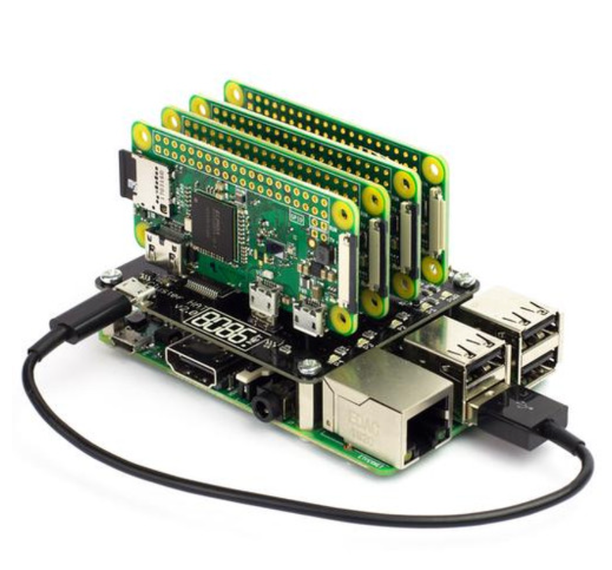{kind=link}
This gadget costs $150!
Finally, learn what you can do using tools from the Data Science world [Bla22] using Python tools!
I hope to upgrade my simple code here and run it on my baby cluster or one of my hot Mac machines with many cores and GPU units! Maybe one day I can run it on Cheyenne. It will probably not even notice that my code ran there! I certainly do not need 145000 processors for this problem!
Have fun!